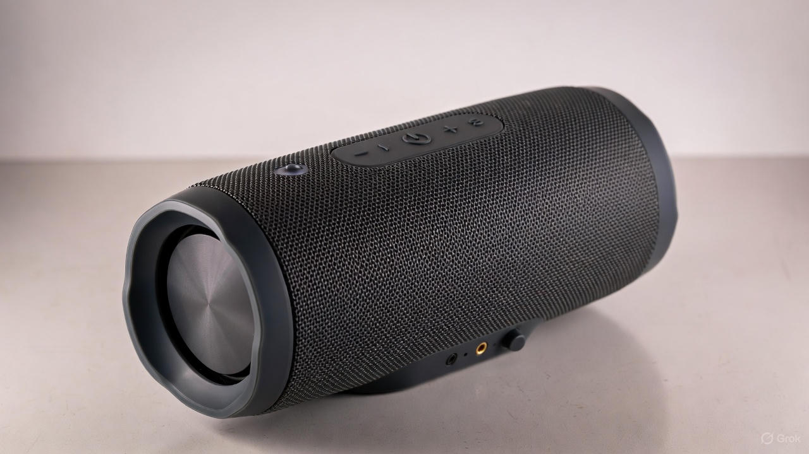

Smart Portable Speakers

Home |
About |
Contact |
About Us
The Smart Portable Speaker is designed to deliver high-quality sound on the go. It connects easily to Bluetooth, has long battery life, and comes in different colors.
Features
- Wireless Bluetooth Connection
- 10-hour battery
- Compact and lightweight design
- High-quality stereo sound
- Available in black, white and blue
Steps to connect
- Turn on the speaker by pressing the power button
- Enable Bluetooth on your device (phone, tablet, etc.).
- Search for available devices and select "Smart Portable Speaker"
- Once connected, you can start playing your music!
Specifications
| Specifications |
Details |
| Bluetooth Range |
33 feet (10 meters) |
| Weight |
1.2 pounds (0.54 kg) |
| Dimensions |
6.5 x 2.5 x 2.5 inches (16.5 x 6.4 x 6.4 cm) |